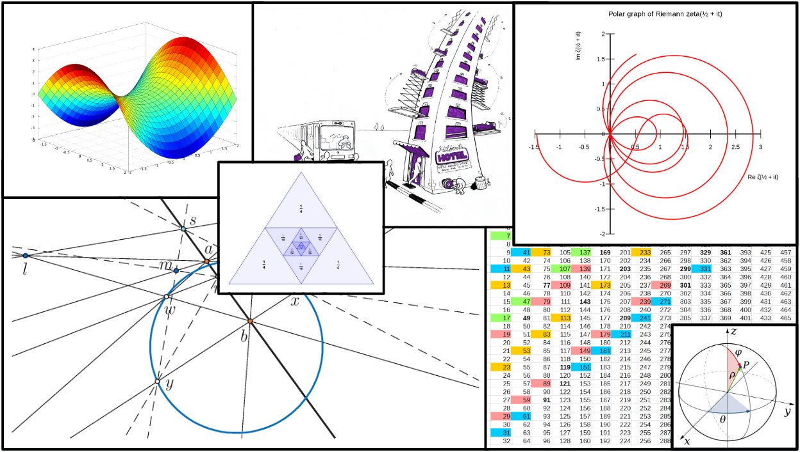

| WILLARD MATH CIRCLE | Home | Information | Resources | Tutoring | Contact Us |
Willard Math Circle is a program aimed for advanced middle school students with a passion for the art of mathematics and for kids who are looking to find a STEM oriented community to share their interests with!
Instead of focusing on memorization and school-oriented math, we encourage students to explore a wide berth of problems and fields and collaborate with their peers on interesting high level math.
Although the content is rigorous and often challenging, the goal is not mastery, but rather an immersive experience intended on developing logical reasoning skills and just having fun with math! Students aren't expected to understand everything, but rather explore areas of math they have never seen before with the support of their peers!
